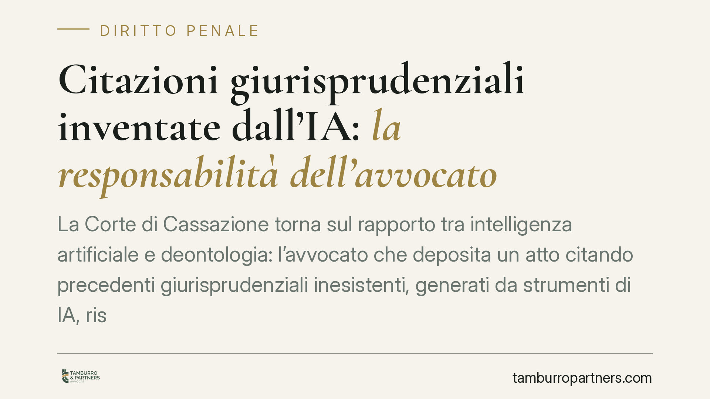

Citazioni giurisprudenziali inventate dall'IA: la responsabilità dell'avvocato
La Corte di Cassazione torna sul rapporto tra intelligenza artificiale e deontologia: l'avvocato che deposita un atto citando precedenti giurisprudenziali inesistenti, generati da strumenti di IA, risponde della propria negligenza. La verifica delle fonti resta un obbligo umano e non delegabile. Il principio ha una portata che supera il solo processo penale.

Il fatto
Il tema è noto a chi utilizza strumenti di intelligenza artificiale generativa per la redazione degli atti: i cosiddetti modelli linguistici possono produrre citazioni di sentenze che non esistono. È il fenomeno dell'allucinazione (in inglese *hallucination*): il sistema, per sua natura statistica, costruisce testi plausibili ma non garantisce la veridicità delle informazioni. Può quindi generare numeri di sentenza, date e massime del tutto inventati, formalmente credibili ma privi di riscontro nelle banche dati ufficiali.
La questione è arrivata all'attenzione della giurisprudenza di legittimità, che si è interrogata sulle conseguenze per il professionista che fonda un'impugnazione su precedenti inesistenti. Il principio emerso è lineare: la provenienza del materiale da un sistema di IA non attenua la responsabilità di chi sottoscrive l'atto.
> Nota di metodo. Gli estremi esatti della pronuncia (numero, anno e sezione) vanno verificati sulle banche dati ufficiali (CED della Cassazione / Italgiure) prima di qualunque utilizzo in un atto o in una citazione formale. In questa sede trattiamo il principio, non la singola massima.
Inquadramento normativo
Nel giudizio di legittimità, la dichiarazione di inammissibilità del ricorso comporta, ai sensi dell'art. 616 del codice di procedura penale, la condanna del ricorrente al pagamento delle spese del procedimento e di una somma in favore della Cassa delle ammende. La determinazione di tale somma non è automatica: il giudice la gradua anche in funzione del grado di negligenza riscontrato nella proposizione dell'impugnazione.
Su questo si innesta il ragionamento in tema di IA. La citazione di precedenti inesistenti non è un vizio neutro: denota una mancata verifica del materiale posto a fondamento dell'atto. Il professionista che deposita un ricorso ha il dovere di controllare che le fonti richiamate siano reali e pertinenti. L'omissione di questo controllo elementare è stata qualificata come particolarmente rimproverabile e può riflettersi sull'entità della somma dovuta.
È bene distinguere due piani. Da un lato c'è ciò che afferma la Corte in ordine alla gradazione della sanzione processuale; dall'altro c'è l'inquadramento deontologico e di responsabilità professionale, che resta oggetto di valutazione nelle sedi proprie. La non delegabilità della verifica umana è il punto fermo che accomuna entrambi i piani.
Implicazioni pratiche
Il messaggio per chi esercita la professione forense è diretto: lo strumento tecnologico non è un soggetto giuridico e non assume alcuna responsabilità. Chi firma l'atto risponde del suo contenuto, comprese le citazioni. Non è ipotizzabile alcuna «delega» della verifica al software.
La portata del principio è trasversale. Pur essendo maturato nel contenzioso penale, lo stesso ragionamento si applica al processo civile, amministrativo e tributario: in ogni ambito l'affidabilità delle fonti richiamate è parte integrante della diligenza professionale e condiziona la tenuta dell'atto.
Il rischio concreto è doppio: una sanzione processuale aggravata e un danno di credibilità nei confronti dell'organo giudicante e del cliente. Un atto che cita precedenti inesistenti perde forza persuasiva nel suo complesso, anche nelle parti corrette.
Un'avvertenza utile: le citazioni «troppo perfette» prodotte dall'IA — con massima sintetica, numero e data apparentemente coerenti — sono spesso proprio quelle da controllare per prime. La verosimiglianza non è prova di esistenza.
Cosa fare in concreto
- Verifica ogni citazione su banca dati ufficiale (CED della Cassazione, Italgiure, repertori istituzionali) prima del deposito: numero, anno, sezione e contenuto effettivo.
- Non delegare il controllo all'IA: lo strumento può assistere la ricerca, mai sostituire la verifica umana della fonte.
- Documenta il controllo svolto, conservando il riscontro della fonte reperita: è una tutela in caso di contestazioni.
- Forma lo studio sull'uso consapevole degli strumenti generativi, con protocolli interni di verifica delle fonti condivisi da tutti i collaboratori.
- Diffida delle citazioni «perfette»: massime troppo pertinenti o formulazioni impeccabili meritano un controllo prioritario.
È opportuno adottare protocolli di verifica interni stabili, così da intercettare gli errori a monte, prima che un singolo episodio si traduca in una contestazione.
---
Contributo informativo a cura di Tamburro & Partners Avvocati - Avv. Giuseppe Tamburro. Non costituisce parere legale.
Ogni condominio ha una storia a sé.
Se gestisci un'amministrazione e vuoi un confronto su una specifica questione condominiale, scrivi allo studio. Ti rispondiamo entro un giorno lavorativo.